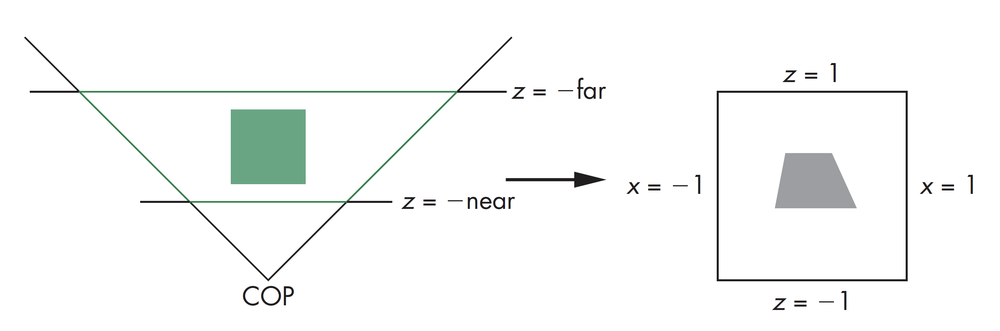

计算机图形学
第五章 成像
投影矩阵
投影矩阵
正交投影规范化
可以将几乎所有的投影变换到默认成像空间中的正交投影成像，因此也就不需要为每种投影分别建立其矩阵表达式。这样就能充分利用图形处理管线中的标准变化，并能有效地计算裁剪
投影矩阵
规范化流水线

模型视图矩阵、投影矩阵都为四阶齐次矩阵表示，两个矩阵都为非奇异阵，在正交投影下默认为单位矩阵
规范化可以利用标准立方体进行裁剪，而不需要考虑投影的类型
默认的投影在此之后进行，可以将隐面消除放在最后，能够一直保持深度信息
投影矩阵
正交投影规范化

规范化指的将特定的裁剪空间变换到标准立方体内
ortho(left, right, bottom, top, near, far)
投影矩阵
正交投影矩阵计算
变换过程有两步:
- 将中心移到原点，即有
T( -(left+right)/2, -(bottom+top)/2, -(near+far)/2 ) - 对边进行缩放，使其长度为2，即有
S( 2/(right-left), 2/(top-bottom), 2/(near-far) )
$$ P=ST=\begin{bmatrix} \frac{2}{left-right} & 0 & 0 & -\frac{right+left}{right-left}\\ 0 & \frac{2}{top-bottom} & 0 & -\frac{top+bottom}{top-bottom}\\ 0 & 0 & -\frac{2}{far-near} & -\frac{far+near}{far-near}\\ 0 & 0 & 0 & 1 \end{bmatrix} $$
投影矩阵
最终投影
令Z=0，对应于矩阵 $$ M_{orth}=\begin{bmatrix} 1&0&0&0\\ 0&1&0&0\\ 0&0&0&0\\ 0&0&0&1 \end{bmatrix} $$
因此，从4D到2D的正交投影矩阵为$P=M_{orth}ST$
投影矩阵
简单透视
考虑透视成像中心位于原点，裁剪平面近处在$z=-1$，成像空间视角为$90$度，其包围平面为$x=\pm z$, $y=\pm z$

投影矩阵
简单透视矩阵
简单透视矩阵以齐次坐标表示为
$$
M=\begin{bmatrix}
1&0&0&0\\
0&1&0&0\\
0&0&1&0\\
0&0&-1&0
\end{bmatrix}
$$
该矩阵与裁剪平面所在位置无关
投影矩阵
透视一般化
一般化透视矩阵为
$$
N=\begin{bmatrix}
1&0&0&0\\
0&1&0&0\\
0&0&\alpha&\beta\\
0&0&-1&0
\end{bmatrix}
$$
即经过乘以透视因子后，点$(x,y,z,1)$变成了
$$
\begin{cases}
x'=x/z\\
y'=y/z\\
z'=-(\alpha+\beta/z)
\end{cases}
$$
即将点进行了正交投影，其值与$\alpha,\beta$无关
投影矩阵
选择$\alpha,\beta$
如果令$\alpha=-\frac{near+far}{near-far}$, $\beta=-\frac{2*near*far}{near-far}$，有近裁剪面对应于$z=-1$，远裁剪面对应于$z=1$，边上四个面对应于$x=\pm 1, y=\pm 1$，该裁剪空间即为默认裁剪空间
投影矩阵
透视投影矩阵规范化
投影矩阵
规范化和隐面消除
虽然可以任意选择透视投影矩阵，一般需要保证如果在原始成像空间中有$z_1>z_2$的话，在对应的变换后的成像空间，也有$z_1'>z_2'$
这样一来，即使先进行规范化变换，隐面消除算法仍然有效
但是，公式$z'=-(\alpha+\beta/z)$里，如果规范化变换造成的形变量较小，尤其是近值较小的情况下，在数值计算上会有问题
投影矩阵
WebGL透视投影
与gl.perspective相比，函数gl.frustum可以应用于非对称的空间

投影矩阵
OpenGL透视矩阵
可对frustum中定义的空间进行规范化，先需要进行错切操作将空间变换为一正常的棱锥，再对棱锥进行缩放，将其变换到标准透视成像空间，其对应矩阵有$P=NSH$，其中$H$对应于错切变换，$S$为缩放操作，$N$为前面定义的透视矩阵透视矩阵
OpenGL透视矩阵
frustum: $$ P=\begin{bmatrix} \frac{2*near}{right-left} & 0 & \frac{right+left}{right-left} & 0\\ 0 & \frac{2*near}{top-bottom} & \frac{top+bottom}{top-bottom} & 0\\ 0 & 0 & -\frac{far+near}{far-near} & \frac{-2*far*near}{far-near}\\ 0 & 0 & -1 & 0 \end{bmatrix} $$
perspective: $$ P=\begin{bmatrix} \frac{near}{right} & 0 & 0 & 0\\ 0 & \frac{near}{top} & 0 & 0 \\ 0 & 0 & \frac{-(far+near)}{far-near} & \frac{-2*far*near}{far-near}\\ 0 & 0 & -1 & 0 \end{bmatrix} $$
投影矩阵
投影矩阵代码实现
function render(){
gl.clear( gl.COLOR_BUFFER_BIT | gl.DEPTH_BUFFER_BIT );
eye = vec3(radius * Math.sin(theta) * Math.cos(phi), radius * Math.sin(theta) * Math.sin(phi), radius * Math.cos(theta));
modelViewMatrix = lookAt( eye, at, up );
projectionMatrix = perspective( fovy, aspect, near, far );
// projectionMatrix = frustum( left, right, bottom, top, near, far );
// projectionMatrix = ortho( left, right, bottom, top, near, far );
gl.uniformMatrix4fv( modelViewMatrixLoc, false, new Float32Array(modelViewMatrix) );
gl.uniformMatrix4fv( projectionMatrixLoc, false, new Float32Array(projectionMatrix) );
gl.drawArray( gl.TRIANGLES, 0, numVertices );
requestAnimFrame( render );
}
投影矩阵
投影矩阵顶点着色器实现
attribute vec4 vPosition;
attribute vec4 vColor;
varying vec4 fColor;
uniform mat4 modelViewMatrix;
uniform mat4 projectionMatrix;
void main(){
v_Position = projectionMatrix * modelViewMatrix * v_Position;
fColor = vColor;
}